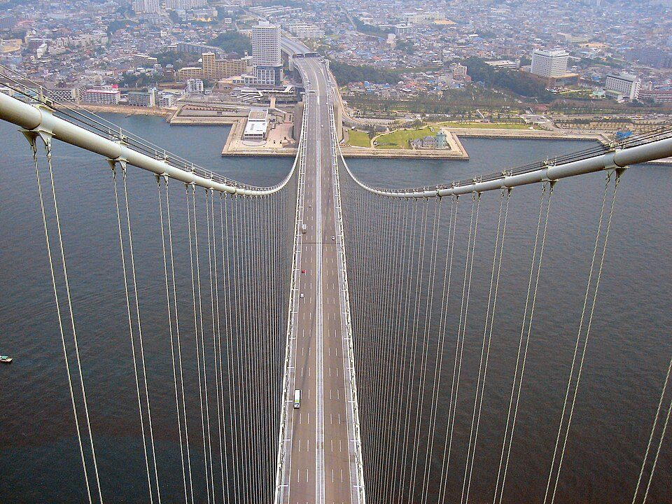
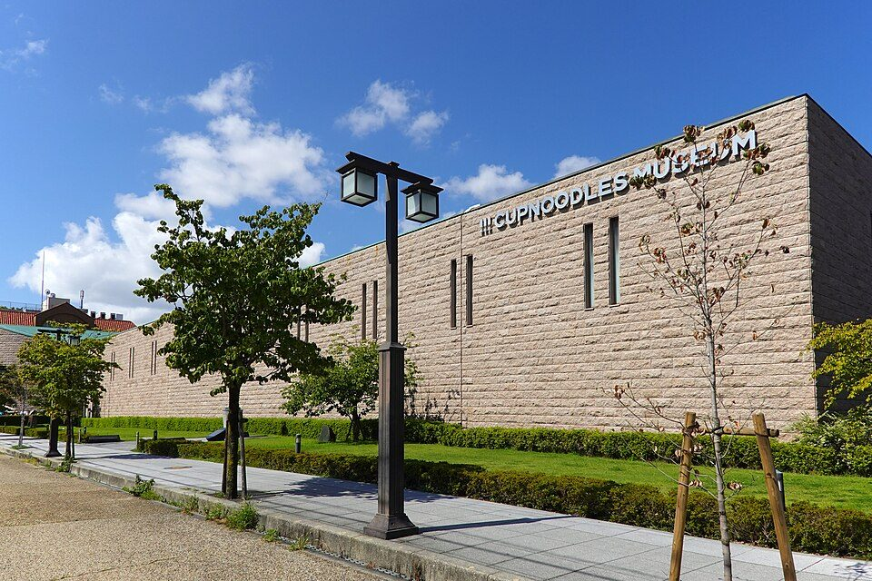
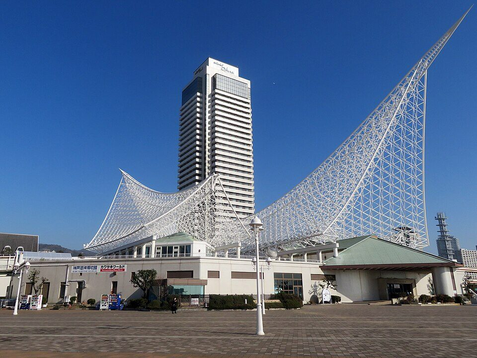
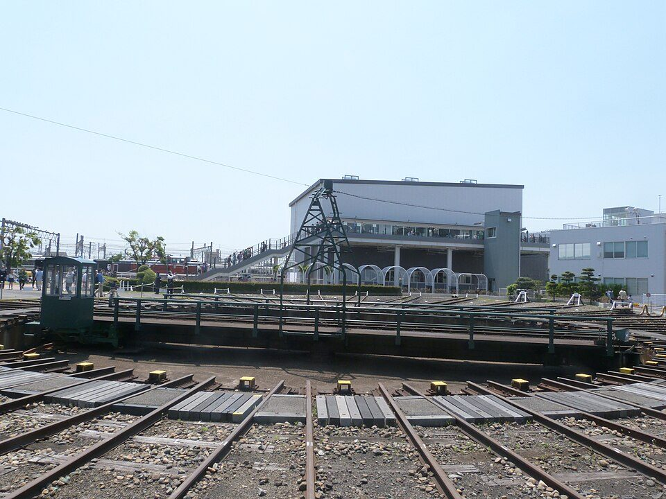
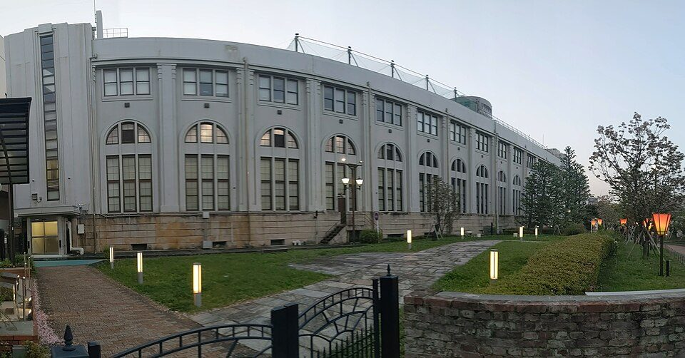
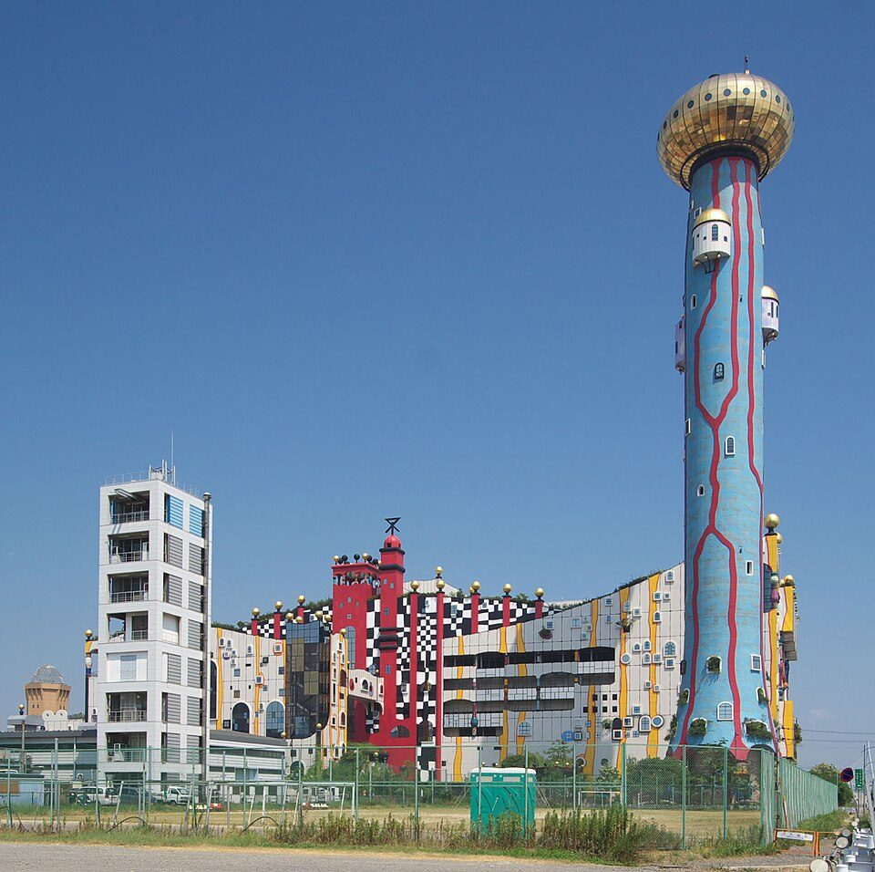

関西の工場見学・社会科見学：兵庫・大阪を中心に、料金・予約・試飲と、無料で行ける施設（2026年版）
要点まとめ
兵庫・大阪を中心に、関西で見学できる工場や国の施設を、公式サイトの情報でまとめました。お酒、食品・お菓子、ものづくり、国の施設・インフラの順に、料金・時間・予約・休み・場所をカードで並べています。京都の施設は「少し足を延ばすなら」として、章の最後に少しだけ載せました。料金は大人1人分です。公式ページに「税込」とあるものだけ税込と書き、税込・税抜の表記がないものはそのことを書いています。

選び方：条件から候補を探す
この記事で取り上げた施設を、行く人や日程の条件ごとに分けました。くわしい料金や予約の方法は、各章のカードを見てください。
| 条件 | 候補 | 気をつけること |
|---|---|---|
| 無料で見たい | 造幣局 本局[3]、日銀大阪支店[6]、舞洲工場[4]、朝日新聞大阪工場[9]、パナソニックミュージアム[10]、グリコピア神戸[11]、白鶴酒造資料館[12]、京都御所[5] | カップヌードルミュージアム 大阪池田は、入館は無料で体験は有料[13] |
| 予約なしで行きたい | 京都御所[5]、大阪取引所の自由見学[14]、白鶴酒造資料館（10名未満）[12]、月桂冠大倉記念館[15] | 月桂冠は、混雑時は待つことや、定員で入れないことがある[15] |
| 20歳以上で試飲したい | キリン神戸工場[16]、アサヒビール ミュージアム[17]、月桂冠大倉記念館[15]（お酒の章） | 車・バイク・自転車を運転する人は飲めない[17][15] |
| 未就学児と行きたい | グリコピア神戸（0歳から）[11]、明治なるほどファクトリー関西（4歳以上）[18]、UCCコーヒー博物館（未就学児は無料）[19] | 明治なるほどファクトリー大阪（高槻）と朝日新聞大阪工場は、未就学児は入れない[20][9] |
| 年齢の下限がある | 日銀大阪支店（原則小学校4年生以上）[6]、ブリッジワールド（12歳以上）[8]、桂離宮（中学生以上）[21] | ブリッジワールドの12〜15歳は大人の同伴が必要[8] |
| 平日しか見学できない | 造幣局（月・火・木・金）[3]、日銀大阪支店[6]、朝日新聞大阪工場[9]、大阪取引所[14]、パナソニックミュージアム[10]、島津製作所 創業記念資料館[22] | 舞洲工場は土曜も見学できる[4] |
| 本人確認書類が要る | 日銀大阪支店（全員）[6]、造幣局（代表者）[3]、桂離宮（全員）[21] | 日銀大阪支店は、忘れると入館できない。コピーは不可[6] |
| 屋外をたくさん歩く | ブリッジワールド[23]、桂離宮[21]、京都御所[5] | 歩きやすい靴で（注意の章） |
公的な一覧もある
近畿経済産業局は「関西の見学可能な産業施設一覧」（福井・滋賀・京都・大阪・兵庫・奈良・和歌山）を公開しています。最終更新日は令和8年（2026年）4月13日で、見学できる日時や条件は掲載の情報と違う場合があるため、各施設に直接問い合わせて申し込むよう書かれています[24]。農林水産省の近畿農政局も、食育のページで府県別の「工場見学等施設一覧」を載せています[25][16]。兵庫県の一覧には、この記事で取り上げていないキユーピー神戸工場（前日までの予約制、土日祝日は見学なし）なども載っています[16]。
お酒の工場（20歳以上は試飲つき）
ビール工場や酒蔵では、製造の説明のあとに試飲ができます。20歳以上1人の料金を比べると、次のとおりです。
キリンは税込。月桂冠とアサヒは、公式ページに税込・税抜の表記がない。サントリーの2工場は、料金を確認できなかったため載せていない
料金改定 キリンビール 神戸工場（神戸市北区）
「一番搾り」のツアーは約70分。予約は3か月先まで[26][2]
- 料金
- 20歳以上1,000円（税込）。20歳未満も同伴できる[26]
- 時間
- 約70分[26]
- 予約
- 必要[16]。毎月1日に、3か月先の月末までの分を受け付ける[2]
- 休み
- 月曜（祝日なら営業し、次の平日が休館）、年末年始[26]
- 場所
- 三田駅・フラワータウン駅から無料送迎バス[27]
アサヒビール ミュージアム（吹田工場、大阪府吹田市）
- 料金
- 20歳以上1,000円、小学生以上300円、未就学無料（税込・税抜の表記なし）[17]
- 時間
- 約90分[17]
- 予約
- 月ごとに受付。2027年1月分は2026年11月20日9:15に受付開始[28]
- 休み
- 年末年始（12月26日〜1月4日）。ほかに月1〜2日（12月は9日、1月は13日）[28]
- 場所
- JR吹田駅の東改札（北口）から徒歩10分[29]
サントリー 山崎蒸溜所（大阪府島本町）
有料のツアーと、無料の山崎ウイスキー館見学がある[25]
- 料金
- ツアーの料金は今回確認できなかった。山崎ウイスキー館見学は無料（製造工程の見学なし）[25]
- 時間
- 10:00〜16:45（最終入場16:30）[30]
- 休み
- 年末年始・工場休業日（臨時休業あり）[30]
サントリーの公式サイトは今回の調査の環境で開けず、ウェブ上に保存されたページ（2026年11月9日保存）で確かめました。ツアーの料金と予約の受付開始の時期は、確認できませんでした。
白鶴酒造資料館（神戸市東灘区）
大正期の酒蔵を使った資料館。無料で自由見学[12]
- 料金
- 無料（自由見学）[12]
- 時間
- 9:30〜16:30（入館は16:00まで）[12]
- 予約
- 10名未満は不要。10名以上は要予約[12]
- 休み
- 年末年始（2026年12月28日〜2027年1月4日）[12]
- 場所
- 阪神 住吉駅から徒歩約5分[12]
少し足を延ばすなら、京都にも次の施設があります。
サントリー〈天然水のビール工場〉京都（京都府長岡京市）
見学のあとに、注ぎたてのザ・プレミアム・モルツ[31]
- 料金
- 今回確認できなかった
- 時間
- 9:30〜17:00（ショップは11:00〜16:30）[31]
- 休み
- 年末年始・工場休業日（臨時休業あり）[31]
- 場所
- JR長岡京駅の西口から無料シャトルバス。阪急 西山天王山駅から徒歩約10分[32]
月桂冠大倉記念館（京都市伏見区）
20歳以上は3種類のきき酒つき。現金は使えない[15]
- 料金
- 20歳以上600円、13〜19歳100円、12歳以下無料[15]
- 時間
- 約40〜60分。9:30〜16:30（受付は16:00まで）[15]
- 予約
- 2週間前の9:30から前日16:30までネットで。予約なしでも入れる[15]
- 休み
- 年末年始（12月28日〜1月4日）、お盆、臨時休館日[15]
- 場所
- 京阪 中書島駅から徒歩5分[15]
灘・伏見の酒蔵めぐり
灘・伏見のほかの酒蔵の資料館や、日本酒の種類・ラベルの読み方は、日本酒の基本と楽しみ方（関西の酒蔵見学）にまとめています。
食品・お菓子の工場と博物館
カップヌードルミュージアム 大阪池田（大阪府池田市）
入館は無料。カップヌードル作りは1食500円[13]

- 料金
- 入館無料。マイカップヌードルファクトリー1食500円、チキンラーメンファクトリー中学生以上1,200円（すべて税込）[13]
- 時間
- 9:30〜16:30（入館は15:30まで）[13]
- 休み
- 火曜（祝日なら翌日）、年末年始[13]
- 場所
- 阪急宝塚線 池田駅から徒歩5分[34]
グリコピア神戸（神戸市西区）
ポッキーとプリッツの工場を、案内付きで無料見学[11]
- 料金
- 無料（要予約）。手作りビスコ体験は2名1組1,500円[11]
- 時間
- 工場見学は約80分。手作りビスコ体験は別に約70分[11]
- 予約
- 完全予約制。12月分は11月4日9時30分に受付開始[11]
- 休み
- 毎週金曜、お盆、年末年始（2026年12月25日〜2027年1月3日）、工場メンテナンス日[11]
- 場所
- 地下鉄 西神中央駅から神姫バスで「高塚台1丁目」下車、徒歩1分[11]
明治なるほどファクトリー 関西（貝塚市）と大阪（高槻市）
名前が似た別の工場。貝塚はヨーグルト、高槻はチョコ[35][36]
関西（大阪府貝塚市）：ヨーグルト工場
所要60分。120mある見学通路から、ドリンク・ソフト・カップのヨーグルトの製造ラインを見る[35]
完全予約制で、当日の予約は不可。1名は電話、2〜10名はネットか電話[35][37]。入館は4歳以上。南海 貝塚駅からバスで約20分[18]
大阪（大阪府高槻市）：チョコレート工場
所要90分。「きのこの山」の成型から、ファミリーパックの包装までを見る[36]
ネット予約は2〜10名。未就学児は入場できない（2024年7月1日から）[20]
明治も、ヨーグルトの「関西（貝塚市）」が、菓子の「大阪（高槻市）」と間違われる場合があると注意しています[35]。料金は、どちらの公式ページにも書かれていませんでした。
UCCコーヒー博物館（神戸市中央区・ポートアイランド）
- 料金
- おとな（高校生以上）880円、小・中学生440円、未就学児無料（税込）[19]
- 時間
- 10:00〜17:00。入館は、予約した1時間ごとの時間帯の間に[19]
- 予約
- 前日23:59までに、事前決済で。無料の人も予約が必要[19]
- 休み
- 月曜・火曜（祝日は開館）、年末年始[19]
- 場所
- ポートライナー 南公園駅から徒歩1分[39]
ものづくり・乗り物
カワサキワールド（神戸市中央区、神戸海洋博物館の中）
本物の0系新幹線の先頭車両で、運転席に座れる[40]

- 料金
- 大人900円、小人（小・中・高生）400円。神戸海洋博物館と共通[41]
- 時間
- 10:00〜18:00（最終入館は17:30）[41]
- 休み
- 月曜（祝日なら翌平日）、年末年始（12月29日〜1月3日）[41]
- 場所
- 地下鉄海岸線 みなと元町駅から徒歩約10分[42]
休館日に注意 パナソニックミュージアム（大阪府門真市）
入館は無料。2026年4月から土曜も休館[10]
- 料金
- 無料[10]
- 時間
- 10:00〜17:00[10]
- 休み
- 土曜・日曜・祝日・お盆・年末年始など[10]
- 場所
- 京阪 西三荘駅から徒歩約2分[10]
竹中大工道具館（神戸市中央区）
- 料金
- 一般1,000円、大学生・高校生と65歳以上700円、中学生以下無料（2026年1月1日改訂）[44]
- 時間
- 9:30〜16:30（入館は16:00まで）[44]
- 休み
- 月曜（祝日なら翌平日）。年末年始は2026年12月26日〜2027年1月4日[44]
- 場所
- 山陽新幹線 新神戸駅の中央改札口から徒歩約3分[43]
朝日新聞大阪工場（大阪市福島区）
新聞を刷る工場を無料で見学。2名以上で予約[9]
- 料金
- 無料[9]
- 時間
- 約1時間40分（集合〜解散）。集合は11:15・12:15・13:30[9]
- 予約
- 完全予約制（学校団体を優先）。個人は希望月の3か月前の5日から電話で[9]
- 見学日
- 月〜金（祝日を除く）[9]
- 場所
- 大阪メトロ千日前線 野田阪神駅（1号出口）から徒歩約10分[9]
少し足を延ばすなら、京都にも次の施設があります。
京都鉄道博物館（京都市下京区）
本物の蒸気機関車が引くSLスチーム号に乗れる[45]

- 料金
- 一般1,500円、大学生・高校生1,300円、中学生・小学生500円、幼児（3歳以上）200円（税込・税抜の表記なし）[45]
- 時間
- 10:00〜17:00（入館は16:30まで）[45]
- 休み
- 水曜（祝日・学休期間は開館）、年末年始（12月30日〜1月1日）など[45]
- 場所
- JR嵯峨野線 梅小路京都西駅から徒歩約2分[46]
島津製作所 創業記念資料館（京都市中京区）
近代日本の科学・技術の歴史をたどる。要予約[22]
- 料金
- 大人300円、中高生200円、小学生以下無料（税込・税抜の表記なし）[47]
- 時間
- 9:30〜17:00（入館は16:30まで）。見学は約1時間[47]
- 予約
- 3営業日前までに電話で[47]
- 休み
- 水曜・土曜・日曜・祝日・年末年始など[22]
- 場所
- 地下鉄東西線 京都市役所前駅の2番出口から徒歩約2分[47]
国の施設・公共・インフラ（社会科見学）
造幣局 本局（大阪市北区）
硬貨を作る工場を、ガラス越しに無料で見学[3]

- 料金
- 無料[3]
- 時間
- ガイドツアー60分＋造幣博物館で約1時間30分[3]
- 見学日
- 月・火・木・金（祝日・年末年始を除く）。開始は9:30・10:00・13:00・13:30[3]
- 予約
- 見学希望日の前月第3火曜9時から、前日17時まで[3]
- 持ち物
- 予約完了メール（印刷かスマホの画面）と、代表者の本人確認書類[3]
休止予定 日本銀行 大阪支店（大阪市北区）
2026年12月下旬〜2027年3月（予定）は見学休止[6]
- 料金
- 無料[6]
- 時間
- 約60分。10:00〜と13:30〜の1日2回（月〜金）[6]
- 予約
- 見学希望日の90日前から14日前まで、予約サイトで先着順[6]
- 人数
- 1〜15名。原則、小学校4年生以上[6]
- 持ち物
- 参加者全員の本人確認書類（コピー不可）[6]
大阪取引所（OSEギャラリー）
5階の展示を予約なしで見学できる（平日）[14]
- 自由見学
- 予約不要。月〜金（休業日を除く）9:00〜16:30（最終受付16:00）[14]
- 案内付き
- 1〜40名程度。原則1週間前までに予約。10:00〜と14:00〜（各回45分程度）[14]
- 料金
- 見学のページに記載がなかった
舞洲工場（大阪市此花区、ごみ焼却工場）
ごみ焼却工場を無料で見学。10日前までに予約[4]

- 料金
- 無料[4]
- 時間
- 約90分。10時〜・13時〜・15時〜の1日3回[4]
- 見学日
- 月〜土（祝日・年末年始を除く）[4]
- 予約
- 10日前までに、ネットで（先着順）[4]
明石海峡大橋 塔頂体験ブリッジワールド（神戸市垂水区）
海上約300mの主塔の上まで上がる、約2時間50分のツアー[23][7]
- 料金
- 大人（16歳〜）平日5,500円、土日祝6,600円（税込）[7]
- 実施日
- 2026年度は、2026年4〜11月と2027年3月のうち指定の日[7]
- 条件
- 12歳以上。補助具なしで2km以上歩け、階段を上り下りできる人[8]
- 場所
- JR神戸線 舞子駅から徒歩約5分[50]
人と防災未来センター（神戸市中央区）
阪神・淡路大震災の災害ミュージアム。高校生以下は無料[51][52]
- 料金
- 西館・東館で大人650円、大学生450円、高校生以下無料[52]
- 時間
- 9:30〜17:30（入館は16:30まで）[52]
- 休み
- 月曜（祝日なら翌平日）。2026年12月28日〜2027年1月4日と、2027年2月20〜21日も休館[52]
- 場所
- 阪神 岩屋駅・春日野道駅から徒歩約10分、JR灘駅（南口）から徒歩12分[53]
少し足を延ばすなら、京都にも次の施設があります。
京都御所と桂離宮（京都市、宮内庁）
予約・持ち物・撮影の注意と、2026年に変わったこと
関西の工場見学は、ほとんどが予約制です。予約の受付が始まる日は、施設ごとに決め方が違います。
| 施設 | 受付の始まり | 締め切り |
|---|---|---|
| キリンビール 神戸工場 | 毎月1日に、3か月先の月末までの分[2] | ― |
| アサヒビール ミュージアム | 月ごと。2027年1月分は2026年11月20日9:15から[28] | ネットは前日正午まで[17] |
| グリコピア神戸 | 月ごと。12月分は11月4日9時30分から[11] | ― |
| 月桂冠大倉記念館 | 2週間前の9:30から[15] | 前日16:30まで[15] |
| 桂離宮（ネット） | 希望月の3か月前の1日5時から[21] | 3日前の23時59分まで[21] |
| 朝日新聞大阪工場（個人） | 希望月の3か月前の5日から（電話）[9] | ― |
| 日本銀行 大阪支店 | 90日前から[6] | 14日前まで[6] |
| 造幣局 本局 | 前月の第3火曜9時から[3] | 前日17時まで[3] |
| 舞洲工場（個人） | ― | 10日前まで[4] |
| 大阪取引所（案内付き） | ― | 原則1週間前まで[14] |
| 島津製作所 創業記念資料館 | ― | 3営業日前まで[47] |
| UCCコーヒー博物館 | ― | 前日23:59まで[19] |
| 明治なるほどファクトリー関西 | ― | 当日の予約は不可[35] |
「―」は、公式ページに書かれていなかったもの。
- 予約
受付が始まる日を先に調べる
グリコピア神戸は、予約開始時はネットも電話もつながりにくくなると予想している[11]
- 持ち物
本人確認書類を持っていく
- 支払い
現金が使えない施設がある
- 試飲
運転する人は飲めない
- 撮影
撮影のルールは施設ごとに違う
- 服装
歩きやすい靴で、大きな荷物は持たない
2026年に変わったこと・これからの予定
値上げ・休館日の追加・キャッシュレス化が続いた
- 2026年1月1日
竹中大工道具館が入館料を改訂
一般1,000円、大学生・高校生と65歳以上700円[44]
- 2026年4月1日
パナソニックミュージアムが土曜も休館に
日曜・祝日などに加えて[10]
- 2026年6月
グリコピア神戸が土日祝の見学時間を変更
土・日・祝日は1日3回に[11]
- 2026年7月1日
月桂冠大倉記念館が完全キャッシュレスに
2025年10月20日に告知[33]
- 2026年9月1日
キリン神戸工場の予約が3か月先までに
それまでは翌月の月末までだった[2]
- 2026年10月1日
キリン神戸工場のツアーが1,000円に
500円から改定（税込）[1]
- 2026年12月下旬
日銀大阪支店の見学が一時休止
2027年3月まで（予定）。設備工事のため[6]
- 2027年3月
ブリッジワールドの2026年度の残りの実施
2026年度は4〜11月と2027年3月の指定日[7]
| 施設 | 休み |
|---|---|
| 日本銀行 大阪支店 | 2026年12月下旬〜2027年3月（予定）は見学休止[6] |
| グリコピア神戸 | 2026年12月25日〜2027年1月3日[11] |
| アサヒビール ミュージアム | 12月26日〜1月4日[28] |
| 竹中大工道具館 | 2026年12月26日〜2027年1月4日[44] |
| 白鶴酒造資料館 | 2026年12月28日〜2027年1月4日[12] |
| 人と防災未来センター | 2026年12月28日〜2027年1月4日[52] |
| 月桂冠大倉記念館 | 12月28日〜1月4日[15] |
| 京都御所・桂離宮 | 12月28日〜1月4日[5][21] |
| カワサキワールド | 12月29日〜1月3日[41] |
| 京都鉄道博物館 | 12月30日〜1月1日[45] |
キリン神戸工場・カップヌードルミュージアム 大阪池田・UCCコーヒー博物館・造幣局・舞洲工場なども年末年始は休みですが、日付は公式ページに書かれていませんでした[26][13][19][3][4]。
施設の一覧（料金・予約）
| 府県 | 施設（場所） | 大人の料金 | 予約 |
|---|---|---|---|
| 兵庫県 | キリンビール 神戸工場（神戸市北区） | 1,000円（税込）[26] | 必要 |
| 白鶴酒造資料館（神戸市東灘区） | 無料[12] | 10名以上は必要 | |
| グリコピア神戸（神戸市西区） | 無料（体験は有料）[11] | 必要 | |
| UCCコーヒー博物館（神戸市中央区） | 880円（税込）[19] | 必要 | |
| カワサキワールド（神戸市中央区） | 900円[41] | ― | |
| 竹中大工道具館（神戸市中央区） | 1,000円[44] | ― | |
| 人と防災未来センター（神戸市中央区） | 650円[52] | ― | |
| ブリッジワールド（神戸市垂水区） | 平日5,500円・土日祝6,600円（税込）[7] | 必要（事前決済） | |
| 大阪府 | アサヒビール ミュージアム（吹田市） | 1,000円[17] | 必要 |
| サントリー 山崎蒸溜所（島本町） | ツアーは確認できず | 確認できず | |
| カップヌードルミュージアム 大阪池田（池田市） | 入館無料（体験は有料）[13] | ― | |
| 明治なるほどファクトリー関西（貝塚市） | 記載なし | 必要（当日は不可） | |
| 明治なるほどファクトリー大阪（高槻市） | 記載なし | 必要 | |
| パナソニックミュージアム（門真市） | 無料[10] | ― | |
| 造幣局 本局（大阪市北区） | 無料[3] | 必要 | |
| 日本銀行 大阪支店（大阪市北区） | 無料[6] | 必要（12月下旬から休止） | |
| 大阪取引所（OSEギャラリー） | 記載なし | 自由見学は不要 | |
| 舞洲工場（大阪市此花区） | 無料[4] | 必要（10日前まで） | |
| 朝日新聞大阪工場（大阪市福島区） | 無料[9] | 必要（2名以上） | |
| 京都府 | サントリー〈天然水のビール工場〉京都（長岡京市） | 確認できず | 確認できず |
| 月桂冠大倉記念館（京都市伏見区） | 600円[15] | なくても入れる | |
| 京都鉄道博物館（京都市下京区） | 1,500円[45] | ― | |
| 島津製作所 創業記念資料館（京都市中京区） | 300円[47] | 必要（電話） | |
| 京都御所 | 無料[5] | 不要 | |
| 桂離宮（京都市西京区） | 1,000円（18歳以上）[21] | 必要（当日枠あり） |
予約の「―」は、公式ページに個人の予約について書かれていなかったもの。「記載なし」は、公式ページに料金が書かれていなかったもの。
今回確認できなかった点
- サントリー 山崎蒸溜所と〈天然水のビール工場〉京都の、ツアーの料金と予約の受付開始（公式サイトを開けず、保存されたページで確かめた範囲だけを載せた）
- 明治なるほどファクトリー関西（貝塚市）と大阪（高槻市）の料金（公式ページに記載がなかった）
- 大阪取引所の見学の料金（大阪取引所の見学のページに記載がなかった）
- キリン神戸工場の、20歳未満の同伴者の料金
- アサヒビール ミュージアム・月桂冠大倉記念館・京都鉄道博物館・島津製作所 創業記念資料館の料金が税込か税抜か
- UCCコーヒー博物館のリニューアルオープンの年（公式サイトのトップは「7月1日」とだけ書いている）
- グリコピア神戸・パナソニックミュージアム・竹中大工道具館・京都鉄道博物館は、公式サイトを開けず、2026年10〜11月に保存されたページで確かめた
出典（53件）
閲覧日はいずれも2026年11月23日
- 「一番搾りおいしさ実感ツアー」の参加費の改定について（神戸工場、2026年8月7日）（キリンホールディングス）
- 予約受付期間の拡大について（神戸工場、2026年8月3日）（キリンホールディングス）
- 工場見学（本局）（独立行政法人 造幣局）
- 個人の見学について（舞洲工場）（大阪広域環境施設組合）
- 京都御所 参観要領（宮内庁京都事務所）
- 見学のご案内（日本銀行 大阪支店）
- 明石海峡大橋塔頂体験ブリッジワールド 実施概要（本州四国連絡高速道路（JB本四高速））
- ブリッジワールド 参加条件・注意事項（本州四国連絡高速道路（JB本四高速））
- 大阪の新聞印刷工場見学（トッパンメディアプリンテック関西）
- パナソニックミュージアム（パナソニック ホールディングス）
- グリコピア神戸（江崎グリコ）
- 白鶴酒造資料館（白鶴酒造）
- 開館時間・料金（大阪池田）（日清食品（カップヌードルミュージアム 大阪池田））
- 見学方法（大阪取引所見学）（日本取引所グループ）
- 月桂冠大倉記念館 ご見学案内・アクセス（月桂冠）
- 工場見学等施設（兵庫県）（農林水産省 近畿農政局）
- アサヒビール ミュージアム ツアーのお申し込み（アサヒビール）
- 明治なるほどファクトリー関西（貝塚市） アクセス（明治）
- UCCコーヒー博物館 ご利用案内（開館日・入館料など）（UCC上島珈琲）
- 明治なるほどファクトリー大阪（高槻市） 見学予約（明治）
- 桂離宮 参観申込要領（PDF）（宮内庁京都事務所）
- 島津製作所 創業記念資料館（島津製作所）
- ブリッジワールド ツアーの紹介（本州四国連絡高速道路（JB本四高速））
- 関西の見学可能な産業施設一覧（福井･滋賀･京都･大阪･兵庫･奈良･和歌山）（経済産業省 近畿経済産業局）
- 工場見学等施設（大阪府）（農林水産省 近畿農政局）
- キリンビール 神戸工場（キリンホールディングス）
- キリンビール 神戸工場 アクセス（キリンホールディングス）
- アサヒビール ミュージアム（吹田工場）（アサヒビール）
- アサヒビール ミュージアム アクセス（アサヒビール）
- サントリー山崎蒸溜所（サントリー）
- サントリー〈天然水のビール工場〉京都（サントリー）
- 〈天然水のビール工場〉京都 アクセス（サントリー）
- 月桂冠大倉記念館（お知らせ「2026年7月より完全キャッシュレス化を実施」）（月桂冠）
- アクセス（大阪池田）（日清食品（カップヌードルミュージアム 大阪池田））
- 明治なるほどファクトリー関西（貝塚市）（明治）
- 明治なるほどファクトリー大阪（高槻市）（明治）
- 明治なるほどファクトリー関西（貝塚市） 見学予約（明治）
- UCCコーヒー博物館（UCC上島珈琲）
- UCCコーヒー博物館 交通・アクセス（UCC上島珈琲）
- カワサキワールド（川崎重工業）
- 開館時間・入館料（神戸海洋博物館）
- アクセス（神戸海洋博物館）
- アクセス（竹中大工道具館）
- 開館時間・料金（竹中大工道具館）
- 京都鉄道博物館（京都鉄道博物館）
- アクセス（京都鉄道博物館）
- 創業記念資料館 ご利用案内（島津製作所）
- 見学施設（大阪取引所見学）（日本取引所グループ）
- 施設見学・焼却工場オープンデー（大阪広域環境施設組合）
- ブリッジワールド アクセス（本州四国連絡高速道路（JB本四高速））
- 人と防災未来センター（人と防災未来センター）
- 開館時間・休館日・入館料（人と防災未来センター）
- アクセス・駐車場（人と防災未来センター）
写真・画像の出典（6件）
- 明石海峡大橋の主塔の上から見下ろした橋と海
写真: PlusMinus／Wikimedia Commons（CC BY-SA 3.0） - カップヌードルミュージアム 大阪池田（大阪府池田市）
写真: 663highland／Wikimedia Commons（CC BY-SA 4.0） - カワサキワールドが入る神戸海洋博物館の建物（神戸市中央区）
写真: Tokumeigakarinoaoshima／Wikimedia Commons（CC BY-SA 4.0） - 京都鉄道博物館の転車台（京都市下京区）
写真: TOYO GTO／Wikimedia Commons（CC BY-SA 4.0） - 造幣局の建物（大阪市北区）
写真: Mr.ちゅらさん／Wikimedia Commons（CC BY-SA 4.0） - ごみ焼却工場の舞洲工場（大阪市此花区）
写真: ignis／Wikimedia Commons（CC BY-SA 3.0）